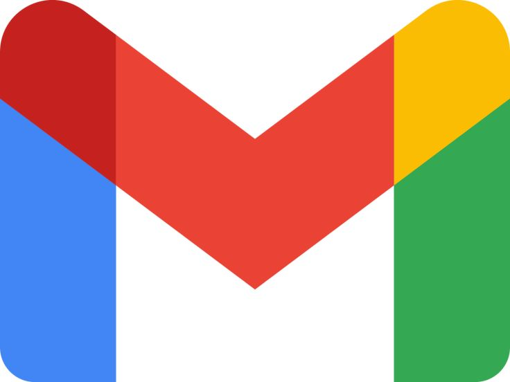
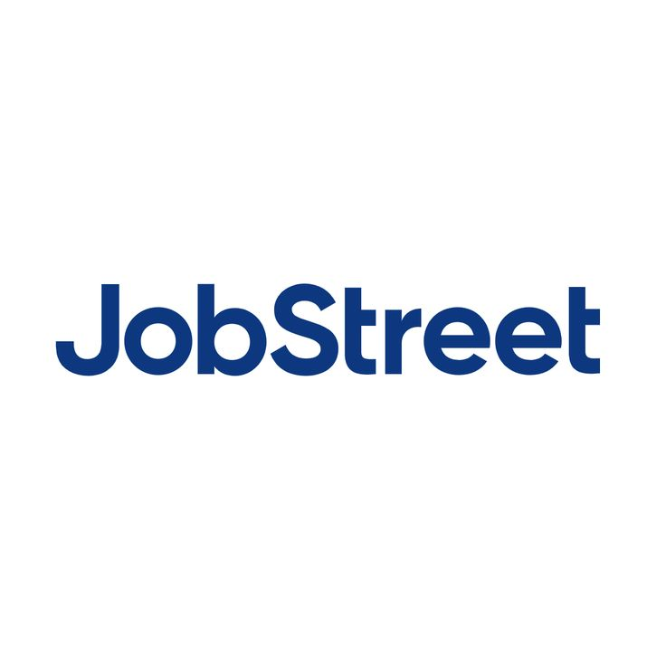
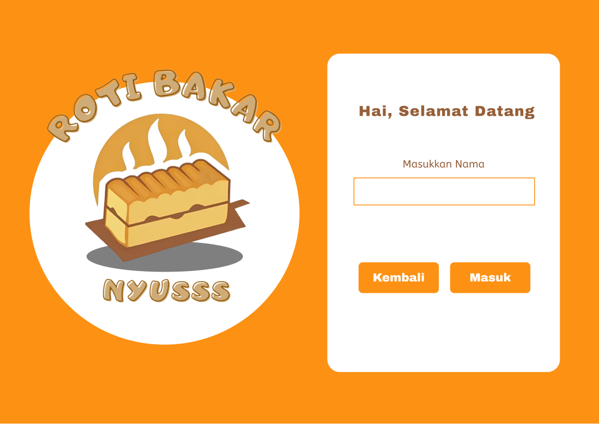
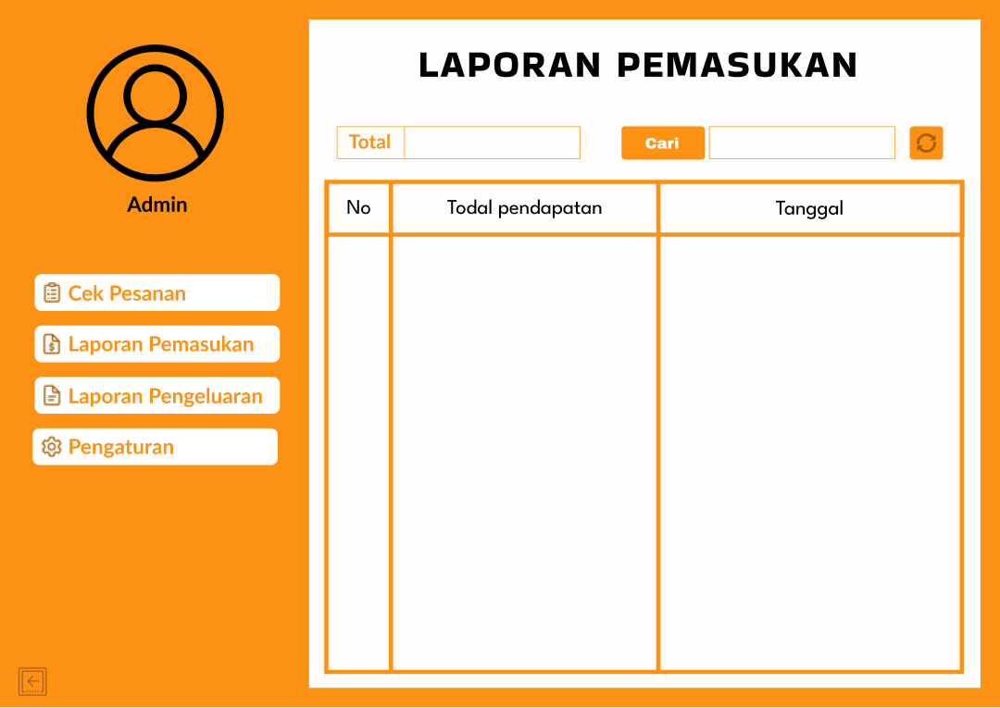
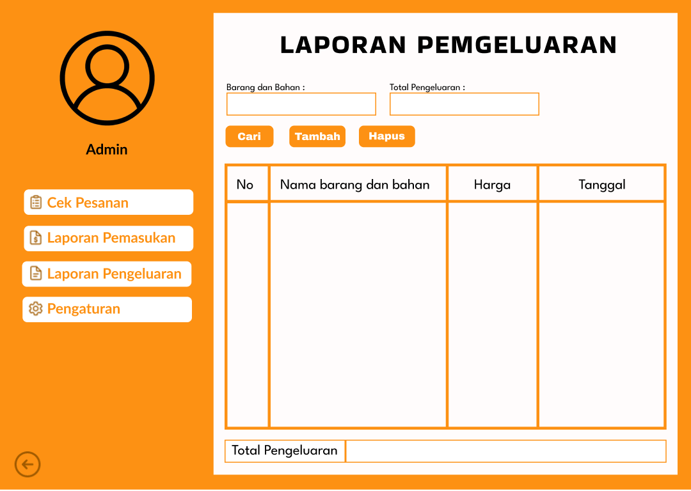
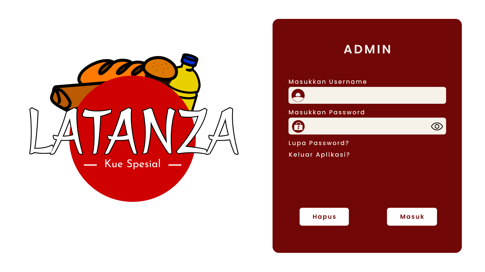
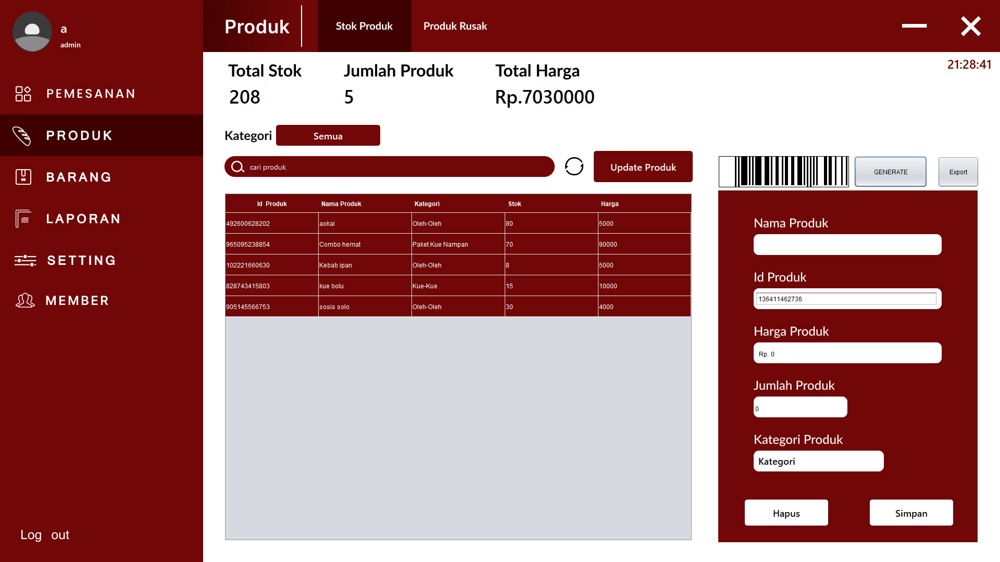
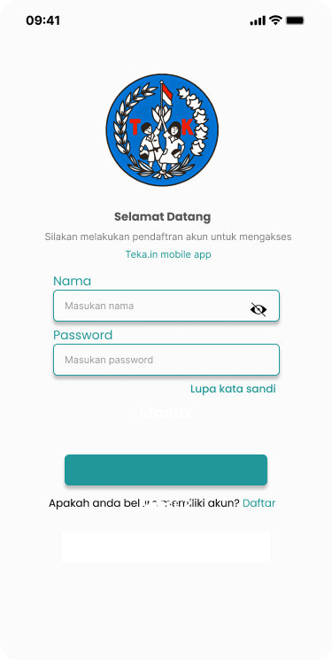
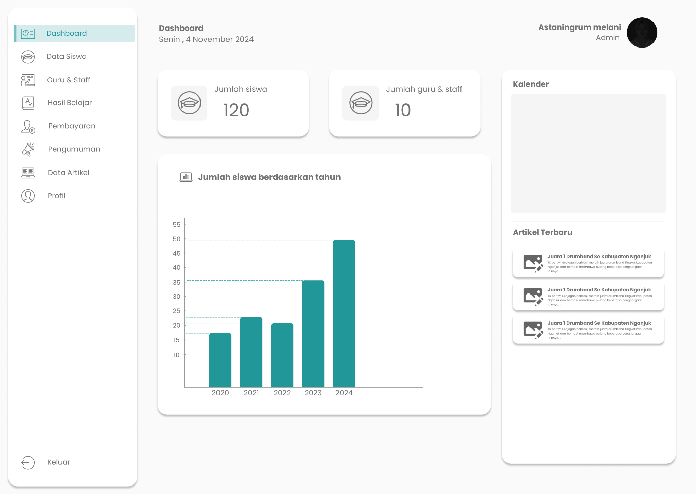

Kontak Saya

Email: putriaradea777@gmail.com LinkedIn: linkedin.com/in/putriaradea-313378361
LinkedIn: linkedin.com/in/putriaradea-313378361

JobStreet: jobstreet.co.id/profile/putri-aradeaSilahkan kunjungi situs web saya untuk mengetahui lebih lanjut tentang siapa saya, apa yang saya kerjakan, dan bagaimana Anda dapat menghubungi saya.
SelengkapnyaSaya adalah mahasiswa yang memiliki minat di bidang teknologi, dengan pengalaman melalui proyek berbasis Project Based Learning. Fokus saya meliputi pengujian perangkat lunak, perancangan basis data, dan dokumentasi teknis.
Saya berencana untuk terus belajar dan mengembangkan keterampilan di bidang teknologi guna mendukung pertumbuhan akademik dan profesional saya.
Selama menempuh pendidikan di Politeknik Negeri Jember, saya terlibat dalam berbagai proyek berbasis pembelajaran dengan peran yang beragam. Pada proyek aplikasi ROKARUS, saya mendokumentasikan proses pengembangan, alur, dan panduan penggunaan. Dalam proyek aplikasi LATANZA, saya merancang struktur dan skema database yang efisien berdasarkan kebutuhan sistem. Sementara pada proyek aplikasi Teka.In, saya merencanakan dan mengelola proses pengujian perangkat lunak, menyusun laporan hasil, serta berkoordinasi dengan tim pengembang untuk memastikan kualitas sistem. Pengalaman ini memperkuat pemahaman saya terhadap alur pengembangan perangkat lunak dan kemampuan bekerja secara kolaboratif.

Email: putriaradea777@gmail.com
LinkedIn: linkedin.com/in/putriaradea-313378361

JobStreet: jobstreet.co.id/profile/putri-aradea


Aplikasi ini dikembangkan dengan tujuan untuk memudahkan pemilik dalam mengelola dan melihat laporan pengeluaran dan pemasukan.


Aplikasi ini dikembangkan dengan tujuan untuk memudahkan pemilik dalam mengidentifikasi dan mengelola data produk melalui scan RFID.


Aplikasi ini dikembangkan dengan tujuan untuk memudahkan admin dalam mengelola data siswa dan memberikan informasi kepada wali murid.